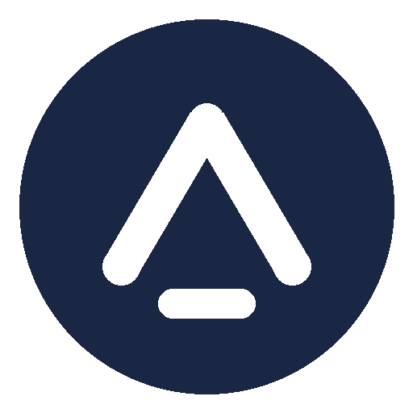
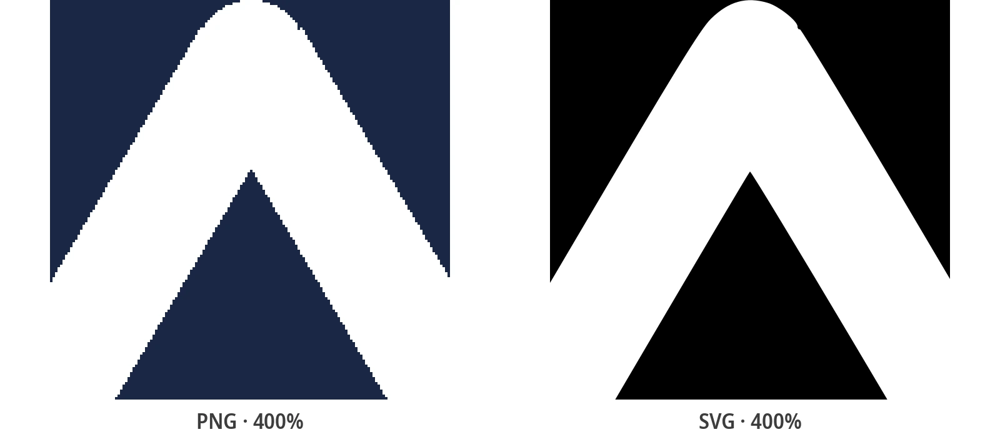

Logo Vektörleştirme: PNG'den Çok Renkli SVG'ye, Ücretsiz
Sadece format değişimi değil, complete teknik: hangi ön ayar, kaç renk korunur, katmanlı SVG ne kazandırır, sonuç nasıl kontrol edilir. Ücretsiz, kayıtsız.
Logoyu vektörleştirmek gerçekte ne demek
Logoyu vektörleştirmek, onu geometrik şekillerle - piksel değil yol (path) - yeniden kurmak demektir; böylece 16 piksellik favicon'dan dükkan levhasına kadar keskin kalır. Doğru yapıldığında SVG, orijinalin her rengini kendi düzenlenebilir katmanı olarak korur. Dosyanız hazırsa ücretsiz çevrimiçi logo dönüştürücübir dakikadan kısa sürede halleder; bu kılavuzun geri kalanı, matbaaya, geliştiriciye veya kesim makinesine teslim edebileceğiniz bir sonuç almakla ilgili.
İki komşu kılavuz bunu odaklı tutar: herhangi bir raster dönüşümü her görüntüyü SVG'ye çevirme kılavuzunda, küçük, bulanık veya pikselli bir logoyu kurtarmaksa aşağıda bağlantılı kendi kurtarma iş akışına sahiptir. Burada logooya özgü zanaatı işliyoruz: renk sayısı, katmanlı çıktı ve kalite kontrolü.
Başlamadan bir uyarı: bazı «dönüştürücüler» size aslında PNG'niz bir base64 <image> etiketine sarılmış .svg verir. Dosyayı metin düzenleyicide açın: <path> öğeleri yerine tek dev kodlanmış blok görüyorsanız, vektör değil yeniden adlandırılmış bir bitmap almışsınızdır.
Dönüştürücünün gerçek sonuçları


Üç tür logo kapıya gelir
Seçeceğiniz ön ayar, elinizdeki üç logodan hangisi olduğuna bağlıdır. Buna ilk karar verin: elinizdeki en büyük kalite kolu bu.
Tek renkli marka
Logotype, ikon, damga: düz zemin üstünde tek renk. En kolay durum: Siyah-Beyaz ön ayarı tek temiz şekil, mümkün en küçük dosya ve gravürcülerin, vinil kesimlerin ve şablonların tam istediğini üretir.
Düz çok renkli logo
İki ile altı düz renk, gradyansız - en yaygın müşteri logosu. Poster ön ayarı bunun için yapılmıştır: her renk bölgesi kendi vektör yoluna, katmanlar halinde dizilir. Genel kılavuzların her şeyi siyah-beyaza düzleterek mahvettiği durum tam da budur.
Gradyanlı amblem
Metalik parlaklıklar, yumuşak gölgeler, 3D efektler. Vektörleme gradyanları yalnızca renk bantları olarak yaklaşabilir. Foto ön ayarı en iyi işi yapar; ama ambleminizin stilize poster versiyonunu bekleyin, bir ikizini değil - ve çok daha ağır bir dosyayı.
Hangi logo için hangi ön ayar
Logonuzu bir satırla eşleştirin ve ön ayarı alın - bütün karar tek tabloda:
| Logonuz | Ön ayar | Elde ettikleriniz |
|---|---|---|
| Tek renkli logotype, ikon veya damga | Siyah-Beyaz | Tek temiz şekil, asgari dosya, kesime hazır |
| 2-6 düz renk (müşteri logolarının çoğu) | Poster | Renk başına bir düzenlenebilir yol |
| Gradyanlar, metalikler, yumuşak gölgeler | Foto | Gradyanlar bantlarla yaklaşık |
| Meşgul veya renkli zemin üstünde logo | Önce hazırlayın | Arka planı kırpın veya silin, sonra vektörleyin |
| Minicik ekran görüntüsü, ~200 px altı genişlik | Daha büyük dosya bulun | Hiçbir ön ayar çözünürlük icat etmez - bulanık logo kılavuzuna bakın |
| İnce serifli veya çok detaylı logo | Poster + daha fazla detay | Yüksek yol detayı ince çizgileri canlı tutar |
Her seçimde piksellere ne olduğuna meraklı mısınız? Mekanik şurada açıklanıyor: vektörleme gerçekte ne yapar.
SVG kaç rengi korumalı?
Genel eğitimlerin atladığı karar budur - hem sadakati hem dosya ağırlığını o belirler. Her ekstra renk yol ekler; ustalık, logonun gerçekten sahip olduğu renk sayısında durmaktır:
- 1-2 renk: Siyah-Beyaz. Marka tek renk artı zeminse, renkli vektörleme yalnızca kenar yumuşatma gürültüsünün bedelini öder. Tek şekil, tüy gibi hafif dosya.
- 3-8 düz renk: Poster. Gerçek logoların tatlı noktası. Marka renkleri, yeniden boyayabileceğiniz adlandırılmış katmanlar olarak yaşar; şekiller arasındaki JPEG pusı emilir, vektörlenmez.
- Onlarca ton: Foto. Yalnızca gradyanlı amblemler için. Sadakat yükselir ama ağırlık da: Foto SVG, Poster kardeşinin on katı ağırlığında olabilir ve yine stilize görünür.
Pratik kural: marka kılavuzundaki renkleri sayın, zemin için bir ekleyin - ve orada durun. Bir rengin amacını adlandıramıyorsanız, vektörleyici onu çizmemelidir.
Katmanlı SVG: renk başına bir yol neden önemli
İyi vektörlenmiş bir logo SVG'sini metin düzenleyicide açın: renk başına bir tane, en büyük önce diye dizilmiş küçük bir <path> yığını bulursunuz. Bu yapı bir uygulama detayı değil; dosyayı bir varlığın resmi değil, çalışan bir varlık yapan şeydir.
Her renk kendi yolu olduğundan, marka yenileme iki dakikalık bir düzenleme olur: katmanı seçin, yeni dolguyu uygulayın, dışa aktarın - Inkscape, Illustrator veya SVG açan her editörde. Web'de bir katmanın dolgusunu currentColor'a bağlamak logonun sayfa temasını otomatik izlemesini sağlar. Düzleştirilmiş bir vektörleme bunların hiçbirini sunmaz: her yeniden boyama sıfırdan vektörleme demektir.
Logo ücretsiz nasıl vektörleştirilir (4 adım)
Hesapsız, kurulumusuz, filigransız:
- Logoyu yükleyin - PNG, JPG, WebP veya BMP'yi sürükleyip bırakın. Elinizdeki en büyük ve en temiz sürüm en iyi vektörleşir.
- Yukarıdaki tabloyla ön ayarı seçin: tek renkli markalar için Siyah-Beyaz, düz çok renkli logolar için Poster, gradyanlı amblemler için Foto.
- Renk sayısını marka paletinine ayarlayın: kabaca logonun tasarlandığı renkler, artı zemin.
- Önizlemeyi aşağıdaki kontrol listesiyle doğrulayın ve SVG'yi indirin - baskıya, web'e veya kesime hazır gerçek <path> öğeleri.
Kaputun altında dönüşüm, açık kaynak Rust tracer'ı VTracer'dan türetilmiş bir otomatik vektörleme motoruyla çalışır. Logonuz katmanlı vektör şekiller olarak yeniden kurulur - asla sarılmaz veya yeniden adlandırılmaz.
Vektörleme iyi mi? 60 saniyelik kalite kontrolü
Dosyayı teslim etmeden önce dört kontrolden geçirin. Bir dakika sürer ve her yaygın hatayı yakalar:
- %400'e yakınlaştırın. Kenarlar pürüzsüz eğri kalmalı. Merdivenler veya pusı, kaynağın çok küçük veya renk sayısının çok yüksek olduğunu gösterir.
- Favicon boyutuna küçültün. Marka 16 px'te okunmuyorsa vektörleme sadıktır ama logo basitleştirilmiş bir ikon varyantına ihtiyaç duyar - yalnızca sembol kısmını ayrıca vektörleyin.
- Renkleri kontrol edin. Her marka rengi kendisi gibi okunmalı. Kaymış tonlar, vektörleyicinin renkleri kenar yumuşatmaya harcadığını gösterir: sayıyı düşürün ve tekrarlayın.
- Dosyayı tartın. Bir logo SVG'si birkaç KB olmalı. Onlarca KB, vektörleyicinin gürültü çizdiği demektir; o ağırlık, dosyayı yükleyen her sayfaya taşınır.
Favicon testi atlanan ve sonra pişman olunan testtir: yalnızca tam boyda çalışan bir vektör, yüksek çözünürlüklü bir PNG'in zaten korumadığı hiçbir şeyi korumaz.
Logo vektörleme ne zaman işe yaramaz - ve onun yerine ne yapmalı
Üç durum, vektörleyicinin açıkçası yanlış araç olduğu halde insanları bu kılavuza getirir:
- Gradyanlı amblemler. Vektörleme gradyanları bant olarak yaklaşır. Parıltı markanın kendisiyse müşteriden orijinal vektörü isteyin veya rasterde kalın - bantlı bir SVG, keskin bir PNG'den daha kötü görünebilir.
- Tek dosya 150 piksellik bir ekran görüntüsü. Hiçbir ön ayar piksel icat etmez, ama ölçekleme tek yol değildir: bulanık logo tamir kılavuzundaki kurtarma iş akışı, küçük dosyalardan düz vektörlemeden çok daha fazlasını söker.
- Aslında üstünde yazı olan bir fotoğraf. Fotoğraflar farklı ön ayarlar ve farklı beklentiler ister - fotoğraftan SVG'ye kılavuzu o bölgeyi kapsar.
Ayırıcı çizgi: vektörleme temiz şekilleri daha temiz şekillere çevirir. Kaynakta temiz şekil yoksa çözüm daha iyi bir kaynak veya yeniden çizimdir - daha fazla ayar değil.
Illustrator mı, Inkscape mi, ücretsiz çevrimiçi dönüştürücü mü?
Üç yol da SVG'ye çıkar. Maliyet, öğrenme eğrisi ve sonrasında neyi düzeltebileceğinizle ayrılırlar:
| Araç | En iyi olduğu iş | Dikkat |
|---|---|---|
| Adobe Illustrator | Tam manuel kontrol: yolları elle yeniden çizmek, kesin marka renkleri, matbaaya teslim | Çoğu zaman tek bir Görüntü İzi (Image Trace) tıklaması için abonelik |
| Inkscape (ücretsiz) | Yerel vektörleme, yol düzenleme ve temizlik - yazılım maliyeti sıfır | Tam bir editörün öğrenme eğrisi; çok renk çoklu tarama sekmesini gerektirir |
| Çevrimiçi dönüştürücü | Tek logo, bir dakika, kurulum yok - logolara ayarlı renk ön ayarları, katmanlı çıktı | Toplu işler ve ağır temizlik masaüstünde kalır; gizli markalar için gizlilik politikasını kontrol edin |
Dürüst bir not: Illustrator'ın Görüntü İzi ve Inkscape'ın Bit haritasını vektörleştirmesi, çevrimiçi bir vektörleyiciyle aynı tür motoru çalıştırır. Ücretli yazılım, vektörlemeden sonraki manuel düzenlemeyi satın alır - daha iyi otomatik vektörleme değil.
Tek logo, her varyant - ve bir toplu iş yolu
Gerçek marka işi hiçbir zaman tek dosya değildir. Aynı dönüşüm bütün seti kapsar:
- Varyantlar: yalnızca ikon, yatay dizilim, koyu zemin için ters renk - her birini kendi raster kaynağından vektörleyin, aynı ön ayar, tutarlı sonuç.
- Varış noktaları: baskı (kartvizitten levhaya), web (favicon'dan hero'ya) ve vektör yollarını doğrudan izleyen kesim veya gravür makineleri.
- Devir: renk başına bir yollu katmanlı SVG, geliştiricilerin ve matbaaların istediği dosyadır - «daha büyük bir versiyon gönderebilir misin?» e-postaları biter.
Bütün kimlik setini tek seferde dönüştürmek - her varyant, her tarihi logo - tam olarak toplu dönüştürme kılavuzunun ücretsiz masaüstü uygulamasıyla otomatikleştirdiği iştir.
İlgili Dönüşüm Kılavuzları
Kurtarma, kuram ve toplu iş - bu kılavuzun çevresindekiler.
Sık Sorulan Sorular
Logo nasıl ücretsiz vektörleştirilir?
Logoyu ücretsiz çevrimiçi dönüştürücüye yükleyin, uygun ön ayarı seçin (tek renk markalar için Siyah-Beyaz, düz çok renkli logolar için Poster, gradyanlı amblemler için Foto), renk sayısını paletleye ayarlayın ve SVG'yi indirin. Hesap ve filigran yok; ücretsiz masaüstü uygulaması aynıını çevrimdışı çalışma için yerel yapar.
Adobe Illustrator olmadan logo vektörleştirilebilir mi?
Evet. Illustrator'ın Görüntü İzi özelliği, ücretsiz araçların kullandığı türde otomatik vektörleme motoru kullanır: abonelik manuel yol düzenlemeyi satın alır, daha iyi otomatik vektörlemeyi değil. Tek seferlik dönüşüm için ücretsiz bir çevrimiçi dönüştürücü veya Inkscape aynı derecede geçerli SVG üretir.
Çok renkli logo renklerini SVG'de korur mu?
Poster ön ayarıyla evet: her renk bölgesi kendi vektör yoluna dönüşür, böylece vektörlenen SVG paleti, her editörde yeniden boyayabileceğiniz düzenlenebilir katmanlar olarak korur. Renkli logolar için Siyah-Beyaz'dan kaçının - her şeyi tek şekle düzleştirir.
SVG'nin arka planı şeffaf mı?
Vektörleme dosyanızdaki şekilleri yeniden üretir: kaynak PNG'nin arka planı şeffafса SVG onu korur; logo düz bir zemindeyse o zemin de şekil olarak vektörleştirilir. Temiz bir kesim için yüklemeden önce arka planı silin ya da sonra bir SVG editöründe zemin katmanını kaldırın.
Gizli bir müşteri logosunu yüklemek güvenli mi?
Çevrimiçi dönüştürücü görüntüyü işler ve atar - hiçbir şey saklanmaz. NDA altındaki veya katı marka kılavuzlu logolar için açık kaynak masaüstü uygulaması aynı dönüşümü tamamen sizin makinenizde, çevrimdışı yapar.
Logonuzu şimdi vektörleştirin - ücretsiz, kayıtsız
PNG veya JPG yükleyin, bir ön ayar seçin ve bir dakikadan kısa sürede katmanlı çok renkli bir SVG indirin - hesapsız, filigransız, Illustratorsuz.
Açık Kaynak Geliştirmeyi Destekleyin
PixelToPath'in kullanımı ücretsizdir. Bu araç zaman kazanmanıza yardımcı olduysa, bana bir kahve ısmarlamayı düşünebilirsiniz.
❤️ Ko-fi üzerinden bağış yap